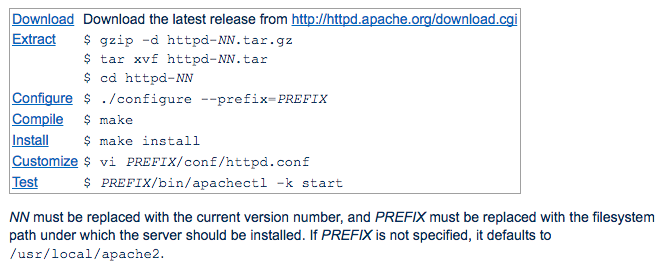
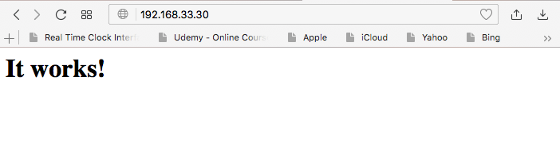

การติดตั้ง package ด้วยการ Build
การติดตั้ง package นั้นนอกเหนือจากการใช้คำสั่ง yum แล้วนั้น ก็ยังมีวิธีการด้วยการ ติดตั้งจาก Source และ user จะต้อง Build ด้วยตัวเองในตัวอย่างนี้จะทำการติดตั้ง Apache ด้วยการ Build ด้วย gcc และ Development Tools
vagrant ssh server
[vagrant@server ~]$ sudo su -
[root@server ~]# yum group list
[root@server ~]# yum groupinstall "Development Tools"
[root@server ~]# gcc --version
gcc (GCC) 4.8.5 20150623 (Red Hat 4.8.5-16)
Copyright (C) 2015 Free Software Foundation, Inc.
This is free software; see the source for copying conditions. There is NO
warranty; not even for MERCHANTABILITY or FITNESS FOR A PARTICULAR PURPOSE.
เปิด browser ไปยัง https://httpd.apache.org/download.cgi

# yum install wget apr-devel apr-util-devel
# yum install pcre pcre-devel
# cd /usr/src
# wget http://www-us.apache.org/dist//httpd/httpd-2.4.29.tar.gz
# tar xvf httpd-2.4.29.tar.gz
# cd httpd-2.4.29
# ./configure --help
# ./configure
# make
# make install
# vi /usr/local/apache2/conf/httpd.conf
# /usr/local/apache2/bin/apachectl -k start
